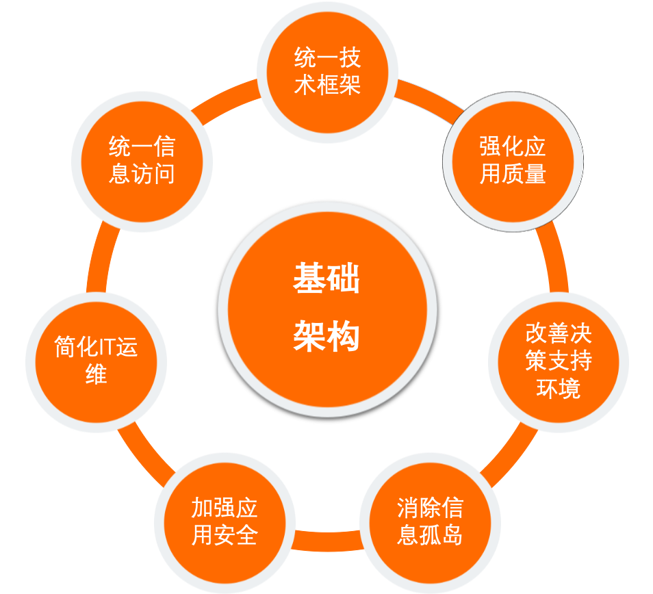

1.基础架构职责
- 设计和开发新一代的基础组件，为重构项目提供技术平台
- 设计和构建统一的应用开发框架，提高应用开发效率和质量
- 建立统一的应用构建标准，为实现对应用的管理，监控和治理的自动化建立基础
- 评估和引进各种国外先进技术，提高公司平台的技术水准
- 建立公司的开源项目，对内部开发的含金量高的项目实现开源，以提高公司的知名度

这些技术解决方案包括：
- 统一的服务化框架体系
服务化是IT技术架构升级改造的核心内容，提供统一的完整的服务化框架体系尤为重要，该体系为构建“分布式服务架构”提供了技术平台，它涵盖了构建和管理一个服务的整个生命周期所需的各种框架和工具。
- 移动客户端和服务端中间层框架
随着越来越多的用户使用移动App购物，快速研发不同的移动App十分重要，因此构建统一的移动客户端和服务端中间层框架就十分有意义，它不仅能加快移动App的研发，也为提高移动App的产品质量提供了保障。
- 系统集成组件—消息总线
随着互联网应用平台包含各种各样的应用，各应用之间需要保持不同形式的信息交换，有些是同步的，有些是异步的，系统集成组件—消息总线则提供了一组组件以满足应用之间异步通讯之需要。
服务的授权，监控和治理 随着系统变得越来越大，越来越复杂，服务数目越来越多，如何对该庞大的系统进行有效的管理，安全的管控以及服务质量的监控就非常重要，因此需要有一整套的工具确保监控，授权和服务的治理。
2. 中间件整理
| 名称 | 分类 | 是否推荐 | 备注 |
|---|---|---|---|
| Halo | 中台应用框架 | Y | 基于DDD+CQRS+扩展点+应用内部流程编排一套的中台落地解决方案 |
| Dubbo | RPC框架 | Y | |
| Apollo | 配置中心 | Y | |
| Janus | 网关 | Y | |
| Nacos | 注册中心 | Y | |
| DDMq | 消息中间件 | kafka与Rocketmq的代理 | |
| Bistoury | 线上问题诊断工具 | Y | Bistoury是去哪儿网的java应用生产问题诊断工具，提供了一站式的问题诊断方案 |
| Nacos | 配置中心 | Y | |
| DAS | 数据库中间件 | Y | 拍拍贷DAS是拍拍贷自研的数据库访问框架。 |
| pmq | 消息中间件 | PMQ是拍拍贷研发一款分布式消息队列，能够保证消息的不丢失，具有部署和运维简单的特性。 |